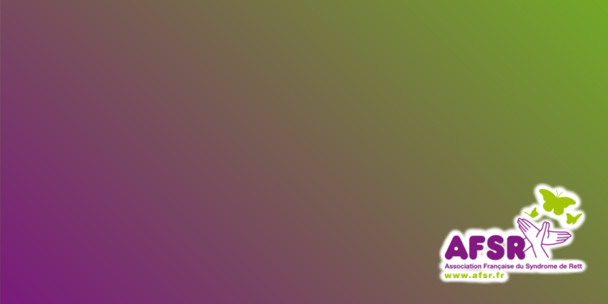
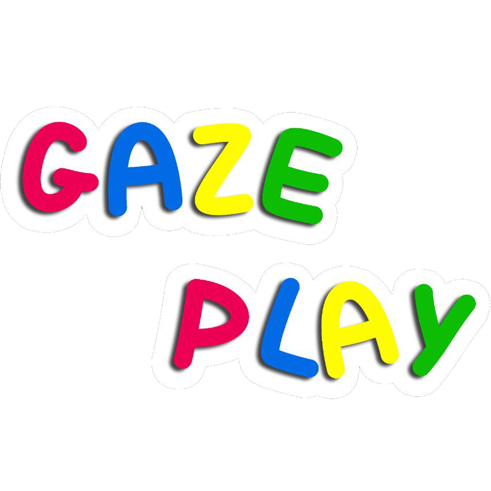
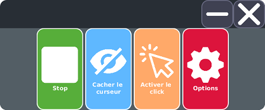
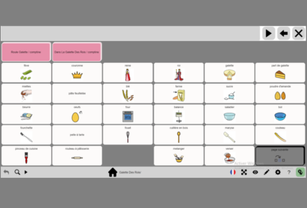
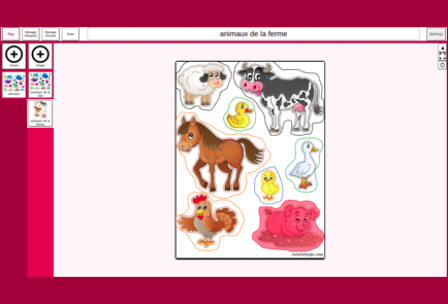
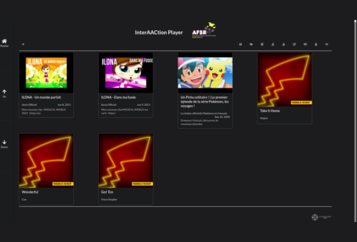
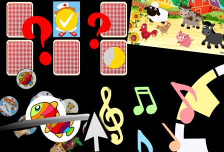

Bienvenue sur InterAACtion Web
Le premier dispositif intégré open source permettant la Communication Alternative et Augmentée pour toutes et tous — désormais accessible directement dans votre navigateur, sans installation.
Découvrir les applications
Contexte et problématique
InterAACtion fédère les forces de chercheurs issus de plusieurs laboratoires de l'Université Grenoble Alpes, dont certains sont aussi parents d'enfants en situation de polyhandicap.
Le projet est développé en collaboration avec des professionnels de terrain (orthophonie, ergothérapie, orthoptie, neuropsychologie) et des personnes proches du quotidien des personnes concernées (éducateurs, professionnels d'institution, aidants).
Profitez de vos logiciels
InterAACtion Web vous permet d'accéder sans limites à des applications accessibles et personnalisables, basées sur la recherche — des jeux, des logiciels de Communication Alternative et Augmentée, et un lecteur multimédia qui regroupe vos plateformes de streaming favorites.
-

GazePlay
Plus de soixante mini-jeux sérieux pour apprendre à piloter l'ordinateur avec le regard.
Intégration en cours -
AugCom
Communication alternative et augmentée par grilles personnalisables et banques d'images libres.
Lancer AugCom -
InterAACtionScene
Création de scènes visuelles ludiques, avec images et enregistrements sonores personnalisés.
Intégration en cours -
InterAACtionPlayer
Lecteur multimédia connecté à YouTube, Spotify et Deezer, pilotable avec le regard.
Intégration en cours
Calibrez votre regard
InterAACtionGaze est un logiciel simple d'utilisation et accessible qui calibre le regard pour le mouvement de la souris, en compensant le décalage entre là où l'utilisateur regarde et là où il veut regarder.
Sur le web, la calibration haute précision requiert un eye-tracker matériel (Tobii) relié via l'application compagnon. Sans matériel, un suivi par webcam (WebGazer.js) est disponible en repli, avec une précision moindre mais sans installation.


Communiquez et partagez avec AugCom
AugCom est un logiciel de communication alternative et augmentée inspiré des nombreuses applications existantes et en constante amélioration grâce aux retours utilisateurs et à la recherche.
Il permet de créer ou d'importer vos grilles de communication personnalisées, en utilisant les banques d'images libres intégrées ou en important vos propres images.
Éveillez à la CAA avec InterAACtionScene
InterAACtionScene est une application simple d'utilisation et accessible qui facilite et accélère l'apprentissage de la communication.
Importez vos images et créez des scènes visuelles ludiques, enrichies de vos propres sons enregistrés.


En avant la musique !
Ce lecteur multimédia complet vous permet de créer, modifier, partager et écouter vos playlists favorites.
Choisissez vos musiques parmi celles disponibles sur les plateformes de streaming les plus connues (YouTube, Spotify, Deezer), ou importez directement vos médias depuis votre ordinateur.
Jouez et apprenez avec GazePlay
Première étape de l'apprentissage pour la mise en place d'une véritable communication par oculomètre, GazePlay rassemble plus d'une soixantaine de mini-jeux sérieux. Les enfants y comprennent et assimilent les conséquences de leurs actions — donc de leur regard — sur l'ordinateur.

Nos partenaires
InterAACtion est un projet développé par l'AFSR en collaboration avec les laboratoires LIG et Gipsa-Lab de l'Université Grenoble Alpes.
Il est soutenu par la Fondation Free, dont l'AFSR a été lauréate de l'appel à projet « Santé et handicap, des solutions par le numérique », et par la Fondation AFNIC, lauréate 2020 « Pour la solidarité numérique ».
InterAACtion a également été sélectionné Lauréat de la catégorie « Nouvelles technologies » de la 13ᵉ édition du Prix Klésia.